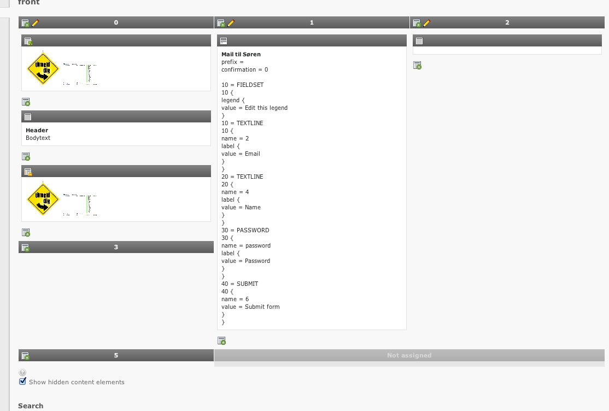
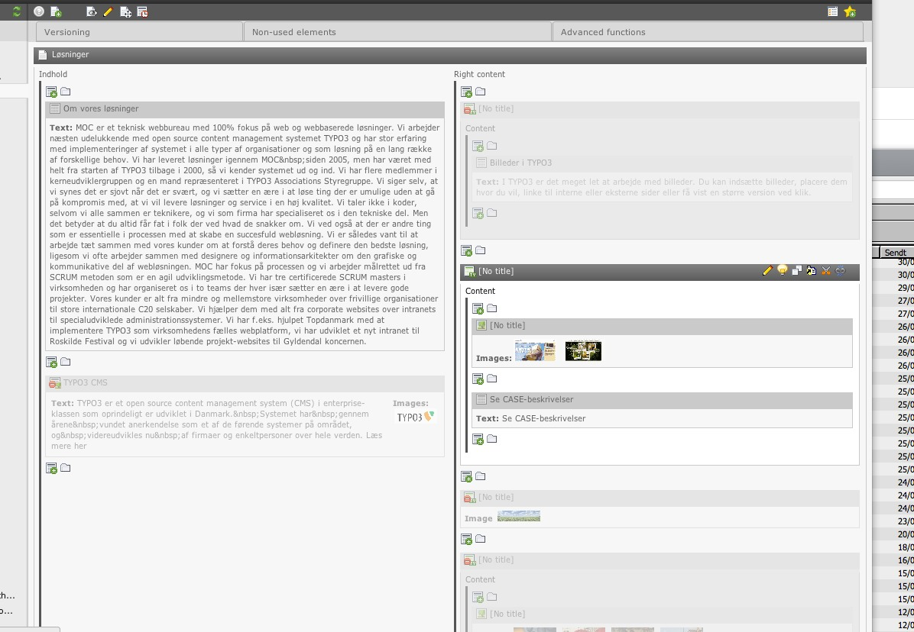
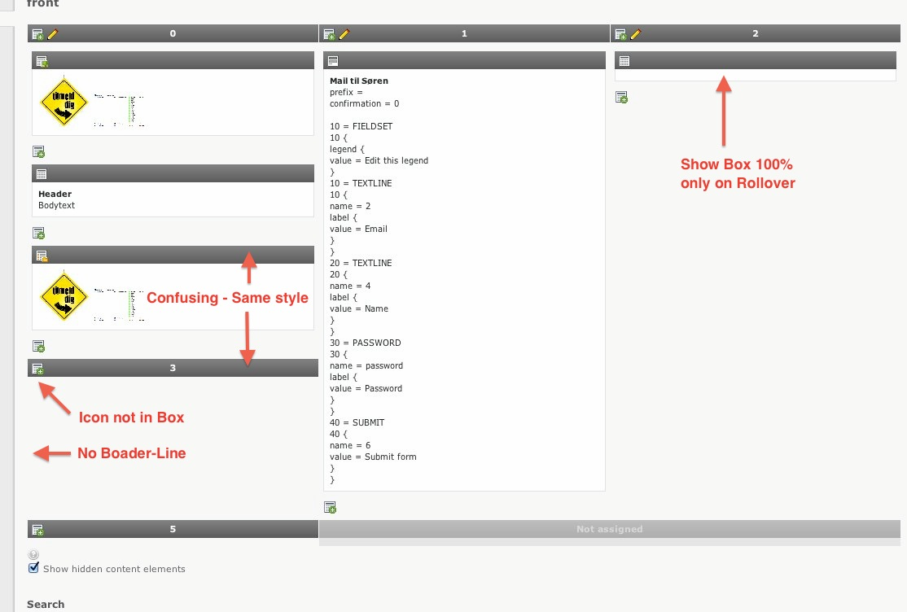
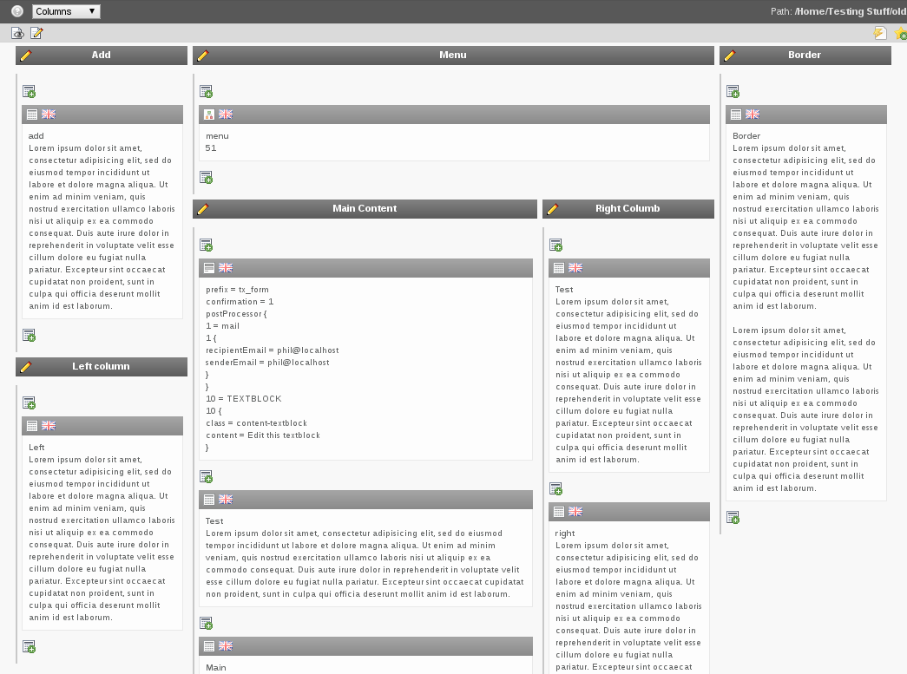
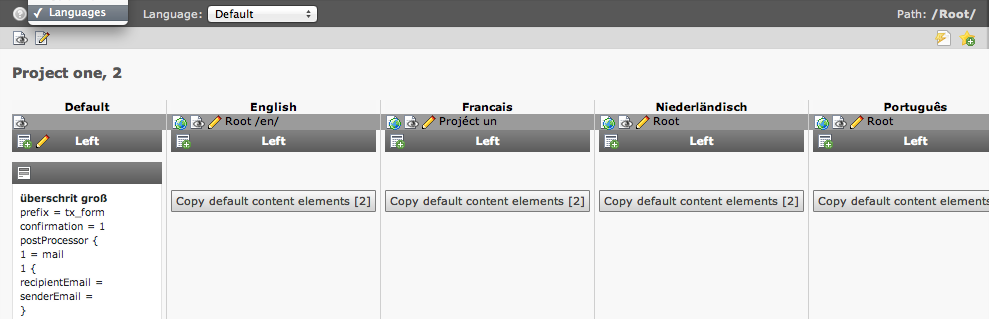
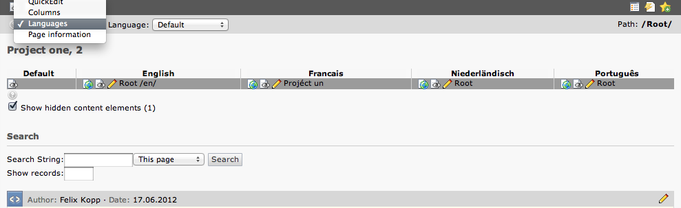

Suggestion #38013
Separate the different columns to avoid content mix up
| Status: | Closed | Start date: | 2012-06-13 | |
|---|---|---|---|---|
| Priority: | Should have | Due date: | ||
| Assigned To: | Jens Hoffmann | % Done: | 0% |
|
| Category: | Usability | |||
| Target version: | - | |||
| Tags: |
Description
Thanks to the new backend_layout concept, you are able to create a backend like the design.
Due to the layout/colors used for both Columns and Content Elements, I find it really easy to get confused when a columns end (when reading down). Look at attached image and read from column named "0" and down. You will find coloumn named "3" being easily mixed up with normal content - at least that was what I did.
Could you guys imagine some kind of way to separate the columns or maybe change content elements colors to avoid this?
{kind=link}
{kind=link}
{kind=link}
{kind=link}
{kind=link}
{kind=link}
Related issues
History
#1 Updated by Fabien Udriot about 3 years ago

#2 Updated by Jens Hoffmann about 3 years ago
I would love to see a similar Box/Grid styling like in TV here.
Less Header Gradients :)
#3 Updated by Soren Malling about 3 years ago
- File tv-content-styling.jpg added
- Assigned To set to Jens Hoffmann
Hi Jens,
Can you describe it a bit more (attached photo of templatevoila box/grids)

What parts would make it a nicer UI? I would love to invest the time on implementing this nicer look for 6.0 :)
#4 Updated by Jens Hoffmann about 3 years ago
- File backend_layout-content-mixing.jpeg added
Here are some points what better done in the TV layout :)
Contrast is the key - Clear differentiation is the goal.

#5 Updated by Steffen Ritter about 3 years ago
I personally hate the borders left of the columns intemplavoila because the look looks cluttered.
I would prefer white space between columns here and probably marking the border implicitly by raising the column with a very soft shadow.
#6 Updated by Jens Hoffmann about 3 years ago
- Status changed from New to Needs Feedback
Steffen provide a layout for discussion -
or go for the TV solution, works well for me. :)
#7 Updated by Gerrit Code Review almost 3 years ago
Patch set 1 for branch master has been pushed to the review server.
It is available at http://review.typo3.org/13510
#8 Updated by Gerrit Code Review almost 3 years ago
Patch set 2 for branch master has been pushed to the review server.
It is available at http://review.typo3.org/13510
#9 Updated by Gerrit Code Review almost 3 years ago
Patch set 3 for branch master has been pushed to the review server.
It is available at http://review.typo3.org/13510
#10 Updated by Gerrit Code Review almost 3 years ago
Patch set 4 for branch master has been pushed to the review server.
It is available at http://review.typo3.org/13510
#11 Updated by Gerrit Code Review almost 3 years ago
Patch set 5 for branch master has been pushed to the review server.
It is available at http://review.typo3.org/13510
#12 Updated by Philipp Gampe almost 3 years ago
- File grid-view.png added
I second Steffen. On a more complex grid, it looks very cluttered now. It is hard to distinguish the columns, especially you can not see where a column ends (this is unfortunately not visible in the current screenshot, because my screen is too small).

#13 Updated by Jens Hoffmann almost 3 years ago
I looks good to me.
The border ist the only way to show real nesting.
#14 Updated by Philipp Gampe almost 3 years ago
I do not have time ATM to provide a suggestion, so just go ahead.
For the record, I would prefer to have real columns with a change in the background color or to have a background gradient or something like this.
#15 Updated by Felix Kopp almost 3 years ago
He Guys, I like the improvements!
1. Columns (left/middle/teaser/…)
-> 2. Content elements
But I still see a problem with the language view.
In language view there is a third dimension to consider:
1. Languages (en/nl/…/de)
-> 2. Columns (left/middle/teaser)
---> 3. Content elements
#16 Updated by Felix Kopp almost 3 years ago
- File before-patch-db_layout.png added
- File after-patch-checkout-db_layout.png added
Before patch, after patch

before, see column left in default lang

#17 Updated by Gerrit Code Review almost 3 years ago
Patch set 6 for branch master has been pushed to the review server.
It is available at http://review.typo3.org/13510
#18 Updated by Gerrit Code Review almost 3 years ago
Patch set 7 for branch master has been pushed to the review server.
It is available at http://review.typo3.org/13510
#19 Updated by Gerrit Code Review almost 3 years ago
Patch set 8 for branch master has been pushed to the review server.
It is available at http://review.typo3.org/13510
#20 Updated by Felix Kopp over 2 years ago
This issue can be closed since everything had been implemented.
#21 Updated by Jens Hoffmann over 2 years ago
- Status changed from Needs Feedback to Closed